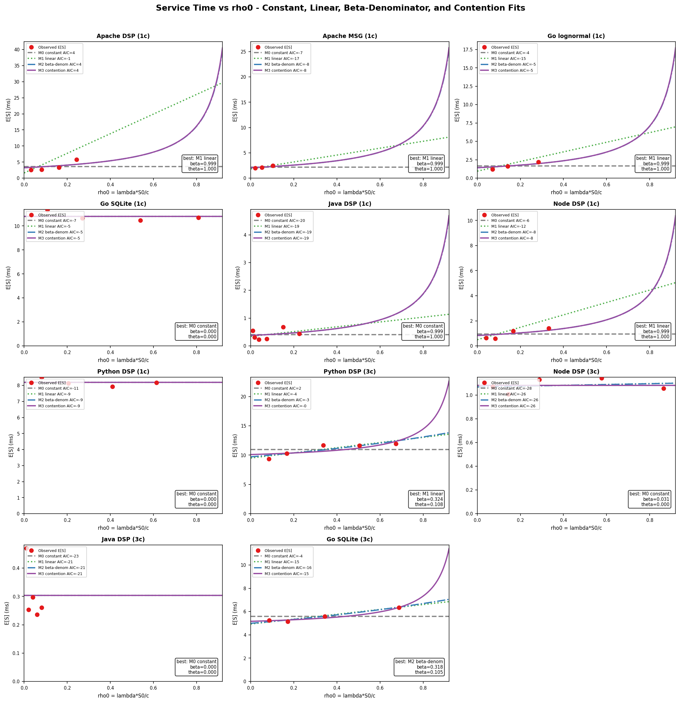
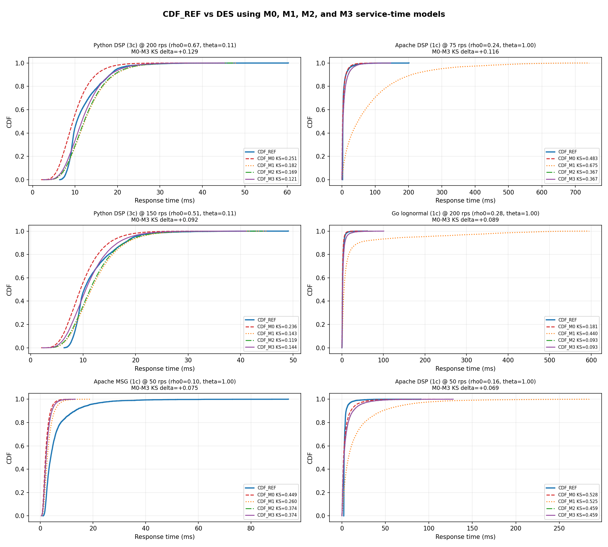
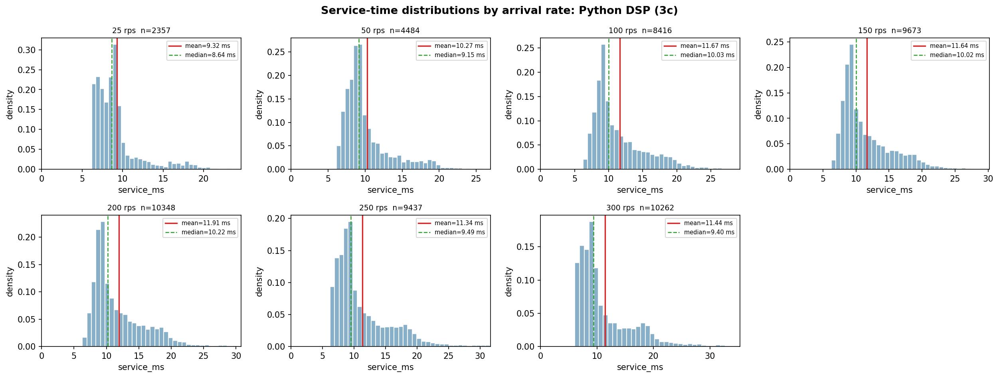
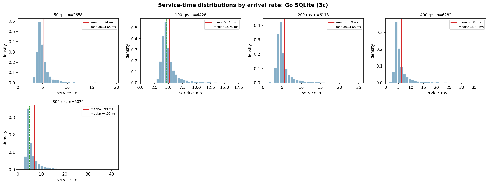

Core question: does changing the service-time model improve the simulated response-time distribution, or does it only make a nicer service-time plot?
Service-Time Fitting
Testing whether service time is really constant under load
A focused math/statistics story: model assumptions, fitted service-time curves, response-CDF validation, histograms, ANOVA, and mechanistic interpretation.
Starting Point
The classical M/G/c assumption treats service time as exogenous
Standard queueing view
- Arrival rate increases: lambda goes up.
- Utilisation increases: rho = lambda E[S] / c.
- Waiting time grows because more jobs queue.
- But the service-time distribution itself is fixed.
What the traces challenged
- For several CPU-bound servers, measured service_ms grew with load.
- That means load changed both waiting time and wall-clock service time.
- So M/G/c was missing a feedback path.
Definitions
The measurement distinction matters before any fitting is meaningful
| Quantity | Meaning in this project | Why it matters |
|---|---|---|
service_ms | Server-side measured time around the compute/handler work. | This is the fitted variable for M0/M1/M2/M3. |
response_ms | Client-observed end-to-end latency. | This is what the DES must predict. |
queue_ms | Approximate response minus service time. | Useful diagnostically, but not the main fitted target. |
rho0 | Nominal utilisation: lambda*S0/c. | Cleaner independent variable for fitting load dependence. |
Model Family
M0, M1, and M2 are competing hypotheses about mean service time
M0: constant
E[S] = S0
No service-time dependence on load. This is the standard baseline.
M1: linear
E[S] = S0 + alpha*rho0
Service time grows, but gently and approximately linearly.
M2: hyperbolic
E[S] = S0 / (1 - beta*rho0)
Service time grows faster near saturation, motivated by time-sharing.
Why M2?
The hyperbolic form is not arbitrary curve decoration
Mechanistic motivation
- Under load, multiple handlers become runnable.
- The OS/runtime time-slices a pinned CPU core.
- Each request may perform similar CPU work, but wall-clock progress slows.
- This creates Processor-Sharing-like slowdown.
Ideal PS-like shape:
slowdown ~= 1 / (1 - rho)
Reduced form:
E[S](rho0) = S0 / (1 - beta*rho0)
beta = strength of observed slowdown
Beta
Beta measures how strongly wall-clock service inflates with nominal utilisation
beta near 0
Service time is nearly constant. M0 should be hard to beat.
0 < beta < 1
Partial load dependence. Service time inflates, but less than pure ideal PS.
beta near 1
Strong time-sharing-like slowdown. High load sharply increases measured service time.
Important: beta below 1 does not mean service time is smaller than the base case. It means the inflation is weaker than the beta=1 curve.
Fitting Procedure
The fit is done on summary-level mean service time across arrival rates
| Step | Input | Output |
|---|---|---|
| 1. Collect points | rate_rps, mean_svc_ms, worker count c | One point per stable arrival-rate experiment. |
| 2. Estimate base | Low-load service-time point or fitted intercept | S0, the near-zero-load service time. |
| 3. Compute nominal load | rho0 = lambda*S0/c | Independent variable not contaminated by inflated service time. |
| 4. Fit M0/M1/M2 | Nonlinear least squares on mean_svc_ms | S0, alpha, beta, AIC, R2. |
| 5. Validate in DES | Fitted service model + replay arrivals | Response-time CDF and KS distance. |
AIC
AIC asks whether a better fit is worth the extra parameters
AIC = 2k - 2 log(L)
k = number of parameters
L = likelihood of the fitted model
Why use it here?
- M0 is simple.
- M1 and M2 have extra flexibility.
- AIC penalises that flexibility.
- So M2 must earn its complexity by fitting noticeably better.
Service-Time Fit
The fitted curves show which workloads violate constant service time

M0/M1/M2 service-time fits across server workloads.
Fit Parameters
Fit parameters separate affected servers, controls, and structural cases
| Server | Best service model | S0 ms | beta | R2 | Readout |
|---|---|---|---|---|---|
| Apache DSP 1c | M1 linear | 3.242 | 0.999 | 0.421 | Strong growth, but finite range favours linear fit. |
| Go lognormal 1c | M1 linear | 1.418 | 0.999 | 0.713 | Fixed programmed work still inflates in wall-clock time. |
| Node DSP 1c | M1 linear | 0.831 | 0.999 | 0.561 | Single event loop still shows load-linked service shift. |
| Python DSP 1c | M0 constant | 8.186 | 0.000 | 0.000 | Control-like: GIL/serial execution suppresses CPU competition. |
| Node DSP 3c | M0 constant | 1.068 | 0.031 | 0.041 | Looks constant, but queue topology is split workers. |
| Go SQLite 3c | M2 hyperbolic | 4.991 | 0.318 | 0.967 | Good curve fit, interpreted cautiously as DB-lock/tandem behaviour. |
Source:
results/tables/service_time_fit_params.csv. AIC selects the best mean-service model; beta is still shown for interpretation.Supervisor Check
A service-time fit is not enough; it must improve response-time CDFs
The challenge
If M2 only fits mean_svc_ms but simulated response times do not improve, then it is not useful as a queueing correction.
The validation target
- CDF_REF: measured response CDF.
- CDF_M0: DES with constant service.
- CDF_M1: DES with linear service.
- CDF_M2: DES with hyperbolic service.
CDF Evidence
M2 is visibly better in the cases where M0 fails

Selected response-CDF comparisons where the load-dependent model improves over constant service.
Full DES Comparison
M0, M1, and M2 are compared inside the same DES pipeline

Response-time CDF overlays produced by the M0/M1/M2 DES comparison.
M3 Stress Test
M3 reframes the effect as a contention penalty instead of nested PS
M3:
E[S](rho0) =
S0 * (1 + theta*rho0/(1-rho0))
Interpretation:
base work + contention penalty
Why this was useful
- It answers the criticism that FCFS plus PS sounds unrealistic.
- It keeps the same saturation-shaped slowdown.
- It tests whether the story survives a different parameterisation.
M3 Fit Plot
The contention-penalty model fits almost the same shape as M2 in many cases

M0/M1/M2/M3 service-time fits. M3 is mainly an interpretation stress test, not a decisive replacement.
M3 Result
M3 is defensible, but it does not clearly dominate M2

Adding M3 improves the interpretation but the DES evidence still supports M2 as the main correction.
Full KS Summary
Across all M0/M1/M2/M3 DES rows, M2 gives the best average KS
Average KS distance
| Model | Average KS |
|---|---|
| M0 constant | 0.5126 |
| M1 linear | 0.5106 |
| M2 hyperbolic | 0.4940 |
| M3 contention | 0.4955 |
Best-model counts
| Best KS model | Count |
|---|---|
| M1 | 24 |
| M0 | 15 |
| M2 | 4 |
| M3 | 4 |
So the honest result is not universal M2 dominance; M2 improves the difficult nonlinear cases and wins on average in this comparison.
Distribution Inspection
The histograms show service-time distributions shifting with arrival rate

Apache DSP: strong shift and heavier right tail.

Go lognormal: programmed work is fixed, but wall-clock service still shifts.
Boundary Histograms
Smaller shifts and structural cases are visible too

Python DSP 3c: smaller but measurable multi-worker shift.

Go SQLite 3c: interpreted as structural database-lock/tandem behaviour, not pure CPU sharing.
ANOVA
ANOVA tests whether service time is independent of arrival rate
Hypotheses
- H0: mean log service time is the same across rates.
- H1: at least one arrival rate has a different mean log service time.
- The log transform is used because service time is right-skewed and approximately log-normal.
Interpretation rule
- Large traces make tiny effects statistically significant.
- So the result uses both
p-value and effect sizeeta^2. - Strongest claim comes from ANOVA + histograms + CDF improvement together.
ANOVA Results
ANOVA result: affected workloads reject constant service with meaningful effect sizes
| Workload | Rates tested | Mean shift | log-ANOVA p | eta^2 | Interpretation |
|---|---|---|---|---|---|
| Apache DSP 1c | 10-100 rps | 2.53 ms -> 51.87 ms | < 1e-300 | 0.3074 | Very strong load dependence; main M0 failure case. |
| Node DSP 1c | 50-1600 rps | 0.64 ms -> 1.64 ms | < 1e-300 | 0.1042 | Runtime/event-loop service-time shift is visible. |
| Go lognormal 1c | 50-400 rps | 1.22 ms -> 2.42 ms | < 1e-300 | 0.0339 | Programmed work was fixed, but wall-clock service still grew. |
| Python DSP 3c | 25-300 rps | 9.32 ms -> 11.44 ms | < 1e-300 | 0.0268 | Smaller but measurable multi-worker contention effect. |
| Python DSP 1c | 10-75 rps | 8.49 ms -> 8.18 ms | 1.0e-16 | 0.0054 | Statistically significant, but effect is tiny; treat as control-like. |
Read this carefully: the p-values are all tiny because the traces are large. The useful ranking comes from eta^2, which measures how much service-time variation is explained by arrival-rate group.
Evidence Chain
The final argument is deliberately multi-layered
| Evidence | What it proves | What it does not prove alone |
|---|---|---|
| Service-time fit | Mean service time changes with load. | That response-time prediction improves. |
| DES CDF comparison | M2 helps where M0 fails. | The exact physical mechanism. |
| Histograms | The distribution itself shifts, not just one noisy mean. | Formal independence rejection. |
| ANOVA on log service | Arrival rate explains service-time variation. | Queueing causality by itself. |
| M3/priority stress tests | Alternative explanations were considered. | That richer models are justified without new traces. |
Final Position
The result is not "M2 always wins"; it is a diagnostic workflow
Conservative claim
- M0 is adequate for some workloads.
- M2 matters where constant service fails.
- M3 is a useful alternative interpretation but not a better universal model.
- Priority/tandem models require new traces with real structure logged.
Thesis value
The contribution is a tested method for discovering when service time is load-dependent, validating whether the correction improves response CDFs, and identifying when the failure is structural rather than service-time related.